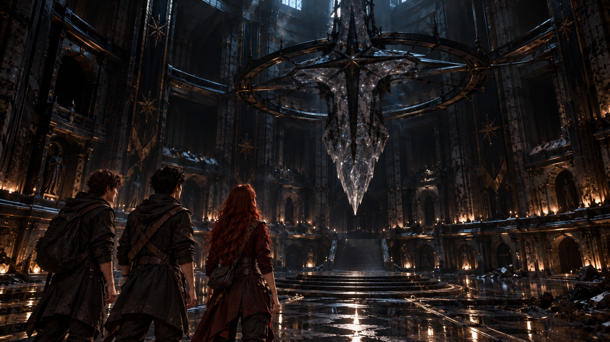
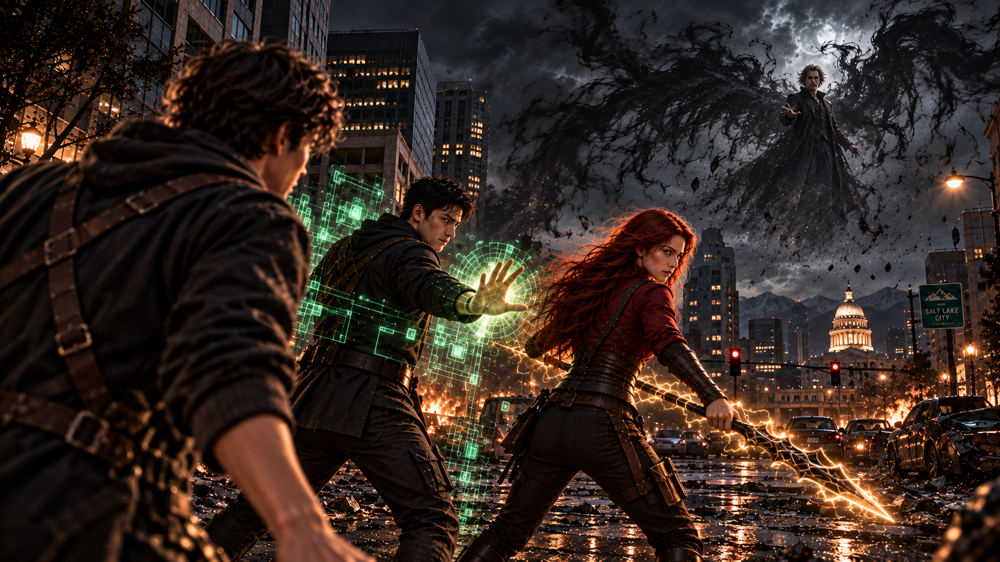
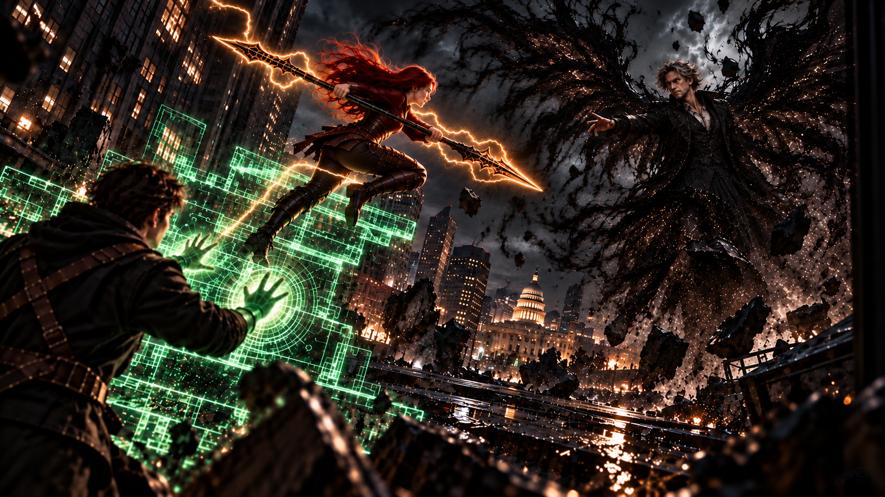

WHITE MAGIC ART STUDIO
第二十二章
為了與祢相遇
美國．猶他州．鹽湖城．東湖地下教會
意識恢復的瞬間，柴克首先感覺到的，是腳下堅實的地面。
寇德薩拉那片耀眼的白光已經消失。
取而代之的，是熟悉的牆壁、辦公桌，以及空氣中淡淡的紙張氣味。
「我們……回來了？」
安娜環顧四周，眼中仍帶著幾分茫然。
克里斯沒有立即回答。
他快步走向窗邊，啟動地下教會特製的觀景裝置。
原本漆黑的窗面泛起微光，逐漸映出地面上的景象。
片刻後，他的神情沉了下來。
「沒錯，我們回到東湖地下教會了。」
他回頭看向兩人。
「這裡是傑西的辦公室，不是什麼異空間。」
柴克鬆了口氣。
「太好了，我還以為我們又要——」
話說到一半，他發現哥哥仍盯著窗外。
「……怎麼了？」
克里斯皺起眉頭。
「外面的情況，不太妙。」
安娜立刻走了過去。
柴克也湊到窗前。
透過觀景裝置，三人看見了此刻的鹽湖城。
原本繁忙的街道空無一人。
濃重的黑霧籠罩在城市上空，沿著建築與道路緩緩流動，將遠方的景物遮得模糊不清。
零星的燈光在霧中閃爍。
除此之外，整座城市幾乎沒有任何動靜。
彷彿所有人都在同一時間消失了。
安娜望著窗外，低聲開口。
「……該不會是那個魔神的傑作吧？」
沒有人回答。
她沉默片刻，忽然長嘆一聲。
「真是太好了。」
克里斯轉頭看她。
「什麼？」
「我們本來就是為了對付那個東西，才千里迢迢跑去寇德薩拉找劍。」
安娜攤開雙手。
「結果好不容易通過三重試煉，最後卻什麼都沒帶回來。」
她看向柴克。
「唯一的收穫，就是發現我們家族傳承了幾千年的姓氏，居然可能只是古代性別刻板印象造成的荒謬誤會。」
克里斯無奈地看了她一眼。
「安娜……」
「我說錯了嗎？」
克里斯張了張嘴，最後還是決定不回答。
他轉向弟弟。
「柴克。」
「嗯？」
「你接下來打算怎麼辦？」
柴克沒有立即回答。
他低頭看著自己的雙手。
在寇德薩拉，這雙手曾經釋放出金色雷電。
而在展示廳裡，他也曾親手握住那柄傳說中的長劍。
皮斯提斯。
那把劍最後仍留在原處。
他並不後悔。
只是，基路伯在試煉結束時說過的話，始終留在他的心裡。
『你只差一把術器了。』
那究竟是指安德莉雅留下的聖劍，還是另一件他尚未理解的事？
他不知道。
直到現在，他仍不清楚自己究竟屬於哪一種類型的聖術師。
偶爾從體內湧出的金色雷光，似乎正在告訴他，某種力量已經開始覺醒。
可那遠遠不足以成為答案。
然而，經歷寇德薩拉的試煉之後，他開始有一種感覺。
自己真正需要的，也許不是從那裡帶走一把古老的聖劍。
「具體該怎麼做，我還不知道。」
柴克終於開口。
克里斯與安娜都望向他。
「可是有一件事，我越來越確定了。」
他抬起頭。
「就像我剛剛在寇德薩拉說的。」
柴克停頓了一下。
「我必須見拉比一面。」
安娜微微皺眉。
「因為魔神？」
「嗯。」
柴克點頭。
「還有我的聖術。」
他攤開掌心。
「我越來越能感覺到，自己的雷之聖術正在覺醒。可是現在根本沒有時間讓我慢慢摸索，更別說弄清楚自己到底是哪一種類型的聖術師。」
他望著掌心，想起皮斯提斯曾經浮現的金色光芒。
「而且……」
他抬起頭。
「你們不是一直說，我們的力量都來自拉比嗎？」
克里斯安靜地聽著。
「如果真的是祂選我成為雷翼，又允許這些事情發生……」
柴克望向窗外的黑霧。
「那我覺得，祂至少該給我一個解釋吧？」
安娜愣了一下。
克里斯則忍不住挑起眉毛。
「你打算找拉比算帳？」
「不是算帳！」
柴克連忙反駁。
「我是想問清楚！」
他停頓片刻，聲音漸漸放輕。
「而且不知道為什麼……」
他望著窗外。
「我的直覺告訴我，祂應該不是一個不講理的人。」
安娜沉默了。
過了一會兒，她才緩緩開口。
「我相信拉比。」
她低頭看向自己的手。
「我的術器還在，就是最好的證明。」
她抬起頭。
「可是祂現在並不在這個世界上。至少，不像我們這樣存在於這裡。」
安娜望著弟弟。
「你打算怎麼見到祂？」
柴克皺起眉頭。
「我想……或許有個方法。」
他轉向哥哥。
「對吧，克里斯？」
克里斯若有所思地看著他。
「你是說……那些夢？」
柴克點頭。
「還有之前在練習室發生的事。」
安娜看向柴克。
「那個你無意識進入的狀態？」
「對。」
柴克接著說：
「那裡一直有個聲音在呼喚我。」
他停頓片刻。
「以前我不知道那是誰。」
克里斯望著他。
「現在呢？」
柴克深吸一口氣。
「我想……那可能是……」
他忽然搖了搖頭。
「不。」
他重新抬起頭。
「我有把握。」
「那就是拉比。」
安娜的神情微微一變。
柴克繼續說：
「我在寇德薩拉碰到皮斯提斯的時候，看見了初代雷翼的記憶。」
「那時候，拉比也出現了。」
他望向兩人。
「祂的聲音，跟我在夢裡聽見的一模一樣。」
克里斯若有所思地點了點頭。
「原來如此……」
安娜仍有些猶豫。
「所以你認為，只要再次進入那個狀態，就有機會和祂溝通？」
「對。」
柴克點頭。
「至少，我想試試看。」
安娜立刻追問：
「那要怎麼進去？」
柴克愣住。
「呃……」
三人面面相覷。
一陣尷尬的沉默。
片刻後，柴克忽然抬起頭。
「等等！」
克里斯被他嚇了一跳。
「怎麼了？」
「我想起來了！」
柴克望向哥哥。
「有一次，你帶我去東湖教會的時候，我在主堂裡看見台上的十字架。」
「然後呢？」
「然後我就進入那個狀態了！」
安娜皺起眉頭。
「你說的是外面那間東湖教會？」
「對！」
「普通人平常聚會的那一間？」
柴克再次點頭。
安娜忍不住仰頭望向天花板。
「真是太好了……」
她無奈地嘆了口氣。
「偏偏是那裡的十字架。」
她指向辦公室外。
「為什麼不能是這裡的？這裡的十字架明明還比較大！」
克里斯望著妹妹，忽然笑了一聲。
「安娜。」
「幹嘛？」
「妳在生氣嗎？」
安娜立刻轉頭。
「我沒有！」
克里斯挑了挑眉。
「從剛剛回來開始，妳的情緒就不太穩定。」
「我說了，我沒有生氣。」
安娜別開目光。
過了一會兒，她才低聲補上一句：
「我只是覺得……」
她看向柴克。
「傑西把取劍的任務交給我們，結果我們什麼都沒帶回來。」
她停頓片刻。
「現在還要把希望寄託在一個不知道能不能成功的方法上。」
克里斯沒有立即回答。
他望向弟弟。
「確實很瘋狂。」
安娜抬起頭。
克里斯卻笑了笑。
「但我選擇相信柴克。」
「喂！」
安娜立刻瞪向他。
「你這樣講，好像我不相信他一樣！」
克里斯忍不住笑出聲。
柴克望著兩人，也跟著笑了。
他知道，安娜並不是在責怪自己。
只是這一次，他確實讓哥哥姊姊陪著自己賭上了太多。
「謝謝你們。」
柴克輕聲說。
安娜看了他一眼，沒有再說什麼。
克里斯則拍了拍他的肩膀。
「好。」
他走向辦公室門口。
「那我們就去東湖教會試試看。」
說完，他推開門。
然而，踏進地下教會的主堂時，克里斯的腳步突然停住。
整座教會安靜得異常。
沒有交談聲。
沒有腳步聲。
就連平日沿著牆面管線流動的雷電聲，也變得微弱而斷續。
原本應該有人駐守的主堂，如今竟空無一人。
克里斯緩緩抬起頭。
主堂中央，那顆巨大的十字形水晶依舊懸浮在半空中。
可是——
原本在水晶內部流動的金色雷光，已經完全熄滅。
四周的導電管線黯淡無光。
整座教會，彷彿失去了心跳。
「糟了……」
柴克跟著走出辦公室。
「怎麼了？」
克里斯緊盯著中央的水晶。
「傑西設下的保護結界……」
他的聲音沉了下來。
「已經消失了。」

安娜臉色驟變。
下一瞬間，她猛然轉身，朝右側走廊衝去。
「安娜？！」
克里斯連忙追上。
安娜沿著走廊奔向醫務室。
她猛然推開門。
「雪莉！」
沒有人回應。
「亞當？！」
房間裡空無一人。
床鋪仍在。
醫療器材也整齊地擺放在原處。
可是那些原本應該待在這裡的人，全都不見了。
安娜站在門口，呼吸微微急促。
「他們……」
她回頭望向趕來的兄弟。
「他們都不見了！」
柴克心頭一沉。
「我們到底離開多久了？」
克里斯快步返回辦公室，確認牆上的時鐘。
「才一個多小時。」
柴克愣住。
「什麼？」
「我們在寇德薩拉的時候，明明感覺至少過了半天。」
克里斯皺起眉頭。
「看來兩邊的時間流動並不一樣。」
柴克望向空蕩蕩的走廊。
「所以……這裡在一個多小時內，就變成這樣了？」
沒有人回答。
就在這時，走廊另一端傳來安娜的聲音。
「克里斯！柴克！」
兩人立刻回頭。
「快過來！」
安娜已經奔向訓練區後方的密室。
她推開門。
隨後，整個人像是終於能夠呼吸般，長長鬆了口氣。
「謝天謝地……」
克里斯與柴克趕到門口。
密室中央，一道熟悉的聖術結界仍靜靜懸浮。
瑞秋安然沉睡在其中。
柔和的金色光芒籠罩著她，將外界的一切隔絕在外。
那是詹姆斯留下的保護。
即使整座地下教會的雷光都已熄滅，這道結界仍然存在。
安娜緩緩走近。
「媽媽還在……」
她望著結界裡的瑞秋，終於稍稍放下心來。
克里斯站在一旁，神情卻依舊凝重。
「恐怕是傑西出了事。」
柴克轉頭看他。
「什麼意思？」
「如果他被黑霧吞沒，原本由他維持的保護結界，就可能跟著消失。」
克里斯望向密室外。
「而結界一旦失效，雪莉和亞當……」
他的聲音停住。
柴克沒有接話。
安娜緩緩握緊拳頭。
克里斯很快搖了搖頭。
「這只是我的推測。」
他看向弟弟。
「我們現在不能再拖了。」
柴克點頭，卻仍忍不住望向瑞秋。
她安靜地沉睡著。
彷彿外頭正在發生的一切，都與這個小小的空間無關。
克里斯走到他身旁。
「柴克。」
柴克抬起頭。
「我們馬上去東湖教會。」
哥哥的手輕輕落在他的肩上。
「你不是一個人。」
柴克望著他。
片刻後，重重點頭。
＊
美國．猶他州．鹽湖城街道
三兄妹離開地下教會時，迎面而來的空氣帶著濃重的焦灼氣味。
柴克下意識停住腳步。
眼前的景象，與他記憶中的鹽湖城截然不同。
原本熟悉的街道，如今空無一人。
車輛停在道路中央。
有些店面的玻璃已經碎裂，散落的物品無人收拾。
黑霧在建築之間緩緩流動。
遠處，偶爾傳來低沉的嘶吼。
天空被濃重的陰影遮蔽。
整座城市彷彿失去了原本的生氣。
「這到底……」
柴克望著前方。
「發生了什麼事？」
話音未落。
砰！
一道黑影突然從屋簷上躍下，重重落在三人面前。
那是一隻體型龐大的惡魔。
牠伏低身體，發出低沉的咆哮。
下一瞬間，猛然撲來！
「退後！」
安娜率先衝出。
金色光芒從她掌中綻放。
雙頭劍術器——艾連，瞬間出現在她手中。
她迅速旋身。
金色雷電沿著兩端劍刃奔流，隨著她的動作劃出一道耀眼的弧線。
轟！
惡魔被雷光擊中，身影瞬間潰散，化為黑色塵埃。
然而，另一道嘶吼緊接著從廢墟後方傳來。
克里斯立刻向前。
綠色程式碼在他雙手周圍迅速交織，凝聚成一對半透明拳套。
怪物才剛衝出巷口，他便迎面揮出一拳。
轟！
綠色雷光猛然爆發。
惡魔的身影隨之崩解。
「走！」
克里斯沒有停留。
三人立刻沿著街道奔跑。
然而，越往前走，情況便越令人不安。
黑霧瀰漫的巷弄裡，不斷傳來怪物爬行的聲響。
破碎的窗戶後方，時不時閃過扭曲的黑影。
甚至連停在路邊的車輛底下，都有惡魔緩緩探出身體。
牠們彷彿早已佔據了這座城市。
安娜與克里斯輪流出手，替柴克清出道路。
金色劍光與綠色雷電在街道間接連閃現。
柴克跟在兩人身旁，呼吸越來越急促。
「惡魔怎麼會變得這麼多？！」
他回頭望向剛剛經過的街道。
「整座城市幾乎都淪陷了！」
克里斯沒有回答。
他的目光忽然停在前方。
黑霧深處。
一道身影正緩緩浮現。
那熟悉的輪廓，讓克里斯的心猛然一沉。
即使隔著如此遙遠的距離，他仍然認得。
那張臉。
詹姆斯。
不。
是佔據著父親身體的魔神。
牠似乎也發現了他們。
黑霧開始翻騰。
克里斯臉色驟變。
「快跑！」
他猛然大喊。
「快！！」
三人立刻加快腳步。
他們穿過街角，躍過裂開的路面，朝東湖教會的方向狂奔。
身后的黑霧越來越近。
柴克不敢回頭。
然而，就在經過一處十字路口時，克里斯的腳步突然慢了下來。
最後，他停住了。
安娜立刻察覺異樣。
「克里斯？」
她回過頭。
「怎麼了？」
柴克也停下腳步。
「你們幹嘛？！」
他望向遠方逐漸逼近的黑霧。
「快跑啊！牠追來了！」
克里斯沒有立即回答。
他只是望著安娜。
片刻後，低聲說出一句話。
「三位一體的心志。」
安娜怔了一下。
隨即，她明白了。
那是他們曾經共同經歷的試煉。
也是他們早已做出的選擇。
安娜看著哥哥，緩緩點頭。
柴克站在一旁，完全摸不著頭緒。
「你們到底在說什麼？！」
安娜轉向他。
「柴克，聽好。」
她握緊艾連。
「我們來拖住牠。」
柴克愣住。
「……什麼？」
「你繼續往教會跑。」
安娜看著他。
「不要停。」
柴克難以置信地望著她。
「妳在說什麼？！」
他又看向克里斯。
「這太瘋了！你們根本對付不了牠！」
克里斯向前一步。
「柴克！」
他的聲音比平常嚴厲許多。
柴克猛然停住。
「別再猶豫了！」
克里斯直視弟弟的眼睛。
「拉比在等你！」
柴克怔怔看著他。
克里斯繼續說：
「我相信你可以！」
黑霧已經逼近街道盡頭。
安娜轉過身，站到哥哥身旁。
柴克望著兩人的背影。

他想起寇德薩拉的試煉。
想起基路伯。
也想起安德莉雅握住皮斯提斯時，那份毫不猶豫的信心。
他仍然不知道自己是否能見到拉比。
不知道祂會不會回答自己的問題。
更不知道自己究竟能為這場危機做些什麼。
但哥哥和姊姊，已經替他爭取了這個機會。
而他不能讓這份信任白費。
柴克緊緊握住拳頭。
「……好。」
他後退一步。
隨即抬起頭，大聲喊道：
「待會兒東湖教會門口集合喔！」
克里斯沒有回頭，只是抬起一隻手。
「看到祂，幫我跟祂說——」
他停頓了一下。
「我們全家都需要加薪！」
安娜忍不住笑了。
柴克也笑了一聲。
那笑容只維持了短短一瞬。
他最後看了兩人一眼。
接著，猛然轉身。
朝教會的方向奔去。
黑霧逐漸籠罩街道。
克里斯與安娜並肩站在路中央。
兩人望著前方，沒有再說話。
過了片刻，克里斯輕聲問：
「準備好了嗎？」
安娜握緊艾連。
「出生就預備好了。」
克里斯笑了笑。
遠處的黑霧突然翻騰。
一道身影 S.升上半空。
魔神。
牠仍使用著詹姆斯的面容。
然而，那張熟悉的臉龐後方，卻展開了一對由黑霧構成的破碎雙翼。
黑色的霧氣沿著翼尖不斷飄散，又重新聚攏。
看見那張臉，兄妹兩人同時沉默了一瞬。
克里斯率先抬起手。
「安娜。」
綠色程式碼迅速在他掌前浮現。
「把牠轟下來！」
數道半透明的階梯在半空中接連生成。
安娜沒有猶豫。
她踏上第一階。
緊接著，第二階、第三階！
綠色數據構成的階梯不斷向上延伸。
安娜的身影沿著階梯迅速躍升。
金色雷光沿著艾連的劍身奔流。

魔神抬頭望向她。
安娜已經來到牠的高度。
她猛然旋身！
雙頭劍劃出一道耀眼的金色弧線，朝魔神斬去！
轟！
雷光在半空中爆發。
魔神的身影被猛然擊退，朝地面墜落！
「克里斯！」
安娜大喊。
「收到！」
克里斯雙手向前一推。
大量綠色程式碼沿著地面迅速擴散。
魔神才剛落地，十數道數據尖錐便從道路下方猛然升起！
尖錐交錯封鎖了牠的行動。
緊接著，數個巨大的綠色方框在空中展開。
它們彼此交錯、組合。
一道厚重的立方體結界，瞬間將魔神困在中央。
「安娜！趁現在！」
克里斯再次大喊。
安娜踩著最後一道數據階梯，猛然躍向高空。
艾連周圍的雷電越來越強。
她雙手握緊劍柄，將力量集中在劍刃上。
隨後——
猛然向下墜去！
轟隆！
劍尖擊中結界頂端。
強烈的金色雷電瞬間沿著整座綠色方體擴散！
數據構成的牆面接連亮起。
金色電流在結界內部交錯奔流，與綠色程式碼形成密集的能量網絡。
被困在其中的黑霧不斷翻騰，卻始終無法突破結界。
刺眼的光芒照亮整條街道。
轟——！
最後一道雷鳴響起。
四周終於安靜下來。
安娜落回地面。
克里斯站在她身旁，緊盯著前方的結界。
兩人都沒有立即說話。
「……成功了嗎？」
安娜低聲問。
克里斯皺起眉頭。
「牠好像沒有動靜。」
結界中央，黑霧緩緩沉降。
一道模糊的人影靜靜站在其中。
安娜盯著那張若隱若現的臉。
忽然，她輕輕哼了一聲。
「如果爸真正的樣子長那樣，我會非常失望。」
克里斯怔了一下。
隨即忍不住笑了。
「哼……」
他望著結界。
「爸真正的樣子，可是比這頭怪物英俊好幾萬倍。」
安娜也笑了。
那一瞬間，兩人彷彿又回到了某個平凡的日子。
回到那個父親還在的家。
然而——
克里斯身後的空氣，突然泛起一陣細微的扭曲。
安娜臉上的笑容瞬間消失。
「克里斯！」
克里斯尚未回頭。
一隻手，已經從黑霧中伸出！
下一瞬間，他整個人被猛然舉離地面。
「呃——！」
克里斯奮力掙扎。
綠色程式碼在指尖急促閃爍，卻始終無法完整凝聚。
黑霧迅速纏住他的雙手，干擾了雷之演算法的運作。
而原本被困在結界中央的那道身影，竟緩緩散成了一團黑霧。
安娜猛然睜大眼睛。
「……假的？！」
魔神根本不在結界裡。
牠不知何時已經繞到了克里斯身後。
那張屬於詹姆斯的臉上，浮現出令人不安的笑容。
「我親愛的大兒子……」
牠輕輕說。
「你這樣說我，爸爸我可是會生氣的。」
克里斯緊咬牙關。
他試圖再次召喚雷之演算法。
然而，黑霧已經沿著手臂逐漸蔓延。
「別掙扎了。」
魔神望著他。
「我這就送你去找其他夥伴。」
牠輕輕吹出一縷黑霧。
那縷黑霧落在克里斯身上。
下一瞬間，黑暗迅速擴散。
「糟了……」
克里斯的聲音逐漸被黑霧淹沒。
安娜猛然向前。
「放開他！」
可是已經來不及了。
黑霧驟然收攏。
克里斯的身影，完全消失。
「克里斯——！」
安娜的聲音響徹街道。
她猛然衝向魔神！
艾連爆發出耀眼雷光。
劍刃帶著強烈的電流橫掃而去！
魔神卻只是輕輕側身。
劍光從牠身旁掠過。
緊接著，牠反手一揮。
一道濃縮的黑色能量猛然擊中安娜。
轟！
安娜被衝擊掀飛，撞上路旁的電線桿，隨即跌落在破裂的道路上。
艾連仍緊握在她手中。
她咬緊牙關，試圖重新站起。
魔神緩緩朝她走來。
「唉……」
牠輕輕搖頭。
「怎麼連女兒也不聽話呢？」
安娜抬起頭。
她望著那張熟悉的臉，眼中滿是憤怒。
「你不是我爸……」
她握緊劍柄。
「你根本不是！」
魔神沒有回答。
牠只是抬起手。
黑霧如潮水般向安娜湧去。
安娜再次試圖揮劍。
金色雷電沿著艾連的劍刃閃爍。
然而，四周的黑霧不斷壓迫，讓她難以集中力量。
「可惡……」
她咬緊牙關。
最後一點金色雷光，仍倔強地在劍刃上跳動。
可下一瞬間，黑霧已經將她完全包圍。
光芒逐漸消失。
街道再次恢復寂靜。
克里斯與安娜的身影，都已不見。
魔神獨自站在破裂的道路中央。
黑霧沿著牠的腳邊緩緩流動。
牠抬起頭。
望向遠方。
那裡，有一道熟悉的氣息正在移動。
一道牠已經尋找了許久的氣息。
魔神的嘴角再次揚起。
黑霧在牠身後聚集，重新展開破碎的雙翼。
下一瞬間——
牠的身影已經升上天空，朝那個方向疾馳而去。
柴克。